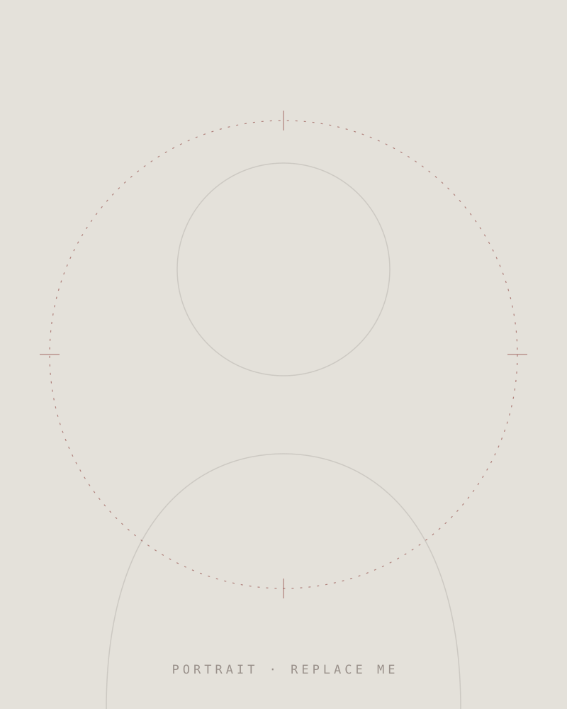

About
Biography

I'm Gabriel Flauzino — a freelance digital illustrator and concept artist based in Brazil, working with clients across the United States. My practice covers character illustration and concept design for games, books and music projects.
I approach every piece like a cartographer approaches unknown territory: survey the idea, plot its structure, then render the world in detail. Clean shapes, deliberate light, and silhouettes that read in half a second.
Experience
- 2024 — NOW Freelance illustrator & concept artist — character and world design for international clients.
- 2022 — 2024 Commissioned character illustration for indie game and tabletop projects.
- 2020 — 2022 Foundations — digital painting studies, visual development and the first published commissions.